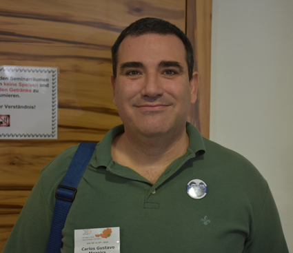

| |
|
|
Carlos Gustavo Tamm de Araujo Moreira, Brazil
Posted Sunday 06 May 2018

Carlos Gustavo Moreira was presented with his Erdös Award on 23 July 2018 at the WFNMC Conference in Graz. Below he is shown
with Maria Falk de Losada (left), Chair of the Awards Committee, and Alexander Soifer, President of WFNMC.
![[Gudu]](wfnmc201832.jpg)
CITATION
Carlos Gustavo Moreira is one of the most brilliant young research mathematicians in the world scenario:
very creative, audacious and most enthusiastic about facing important difficult questions to the development
of different branches of mathematics, most specially dynamical systems and number theory. He is also an
important leader and organizer of Mathematical Olympiads in Brazil and IberoAmerica.
Moreira participated in several Mathematical Olympiads as a student. He won Gold medals in the Brazilian
Mathematical Olympiads of 1988 and 1989, First prizes in the Ibero-American Mathematical Olympiads of 1989
and 1990, Bronze medal in the International Mathematical Olympiad (IMO) of 1989 and Gold medal in the IMO of
1990. He immediately began contributing with the organization of Mathematical Olympiads in Brazil, proposing
problems and training students. In 1992 he became a member of the National Committee for Mathematical Olympiads.
Since then he had a leading role in the organization of the Brazilian Mathematical Olympiad (OBM). He is,
since 1998, Editor and one of the creators of the journal Eureka, of the OBM, which had an important role
in the dissemination of high level preparation resources for Math Olympiads in Brazil. He is, since 2012,
the General Coordinator of the OBM. He had an important role in the recent integration of OBM and OBMEP
(the Brazilian Math Olympiad for Public Schools) � since 2017, the OBMEP selects students to the final step of
the OBM, and these Olympiads involve together about 18 million students in the whole country.
Moreira participated as leader, deputy leader, coordinator and member of the problems selection committees of
several Cono Sur, Ibero-American and International Math Olympiads. To mention some of these participations, he
was deputy leader in the Ibero-American Math Olympiad of 1991, in Argentina, leader in the Ibero-American Math
Olympiad of 1993, in Mexico, and in several other editions, chair of the Problems Selection Committee of the
Cono Sur Math Olympiad of 1993, in Brazil, deputy leader in the IMO of 1999, in Romania, leader in the IMO of
2004, in Greece and of 2007, in Vietnam, member of the Problems Selection Committee (PSC) of the IMO of
2013, in Colombia and chair of the PSC of the IMO of 2017, in Brazil. Since 2009, he is a member, together
with Maria Losada and G�za K�s, of the permanent committee and of the problems selection committees of the
Ibero-American Interuniversitary Mathematical Competition (CIIM), which will have his tenth edition in 2018.
He was coauthor of several books on mathematical problems, including books of problems of the Brazilian, Cono
Sur and Ibero-American olympiads. Moreira often gives talks and classes for olympic students in several regions
of Brasil. He also gave talks and classes of training for olympic teams in several other countries, such as Peru,
Ecuador, Honduras and Portugal.
Early on, he caught the attention of well-established mathematicians for his intelligence in addressing problems
that were totally new to him. He finished his Ph.D. thesis when he was 20 years old. Following that, he did a
Post Doc in Orsay with the Fields Medal Winner - 1994, J.- C. Yoccoz, in which they did a remarkable piece of work,
proving a strong version of a conjecture by Jacob Palis on arithmetic differences of regular Cantor sets, related
to both dynamical systems and number theory. Moreira has several important works in dynamical systems, number
theory and combinatorics, many of them published in major journals as Annals of Mathematics, Acta Mathematica,
Publications Scientifiques de l'IHES, Annales de l'ENS and Matematische Annalen. He received the UMALCA medal in
2009 and the TWAS (The World Academy of Science) prize in 2010. Moreira is fellow of the Brazilian Academy of
Sciences and of the TWAS. He was recently invited to give a plenary lecture at the International Congress of
Mathematicians of 2018 to be held in Rio de Janeiro.
In view of his exceptional scientific contributions to the development of Mathematical Olympiads, especially in
Brazil and in Latin America, he certainly fully deserves to be granted the important 2018 Erdös Award.
|
|